When first time login to the system, the user will see the message from the system as shown in the figure below asking for proposal preparation and submission to the Faculty.
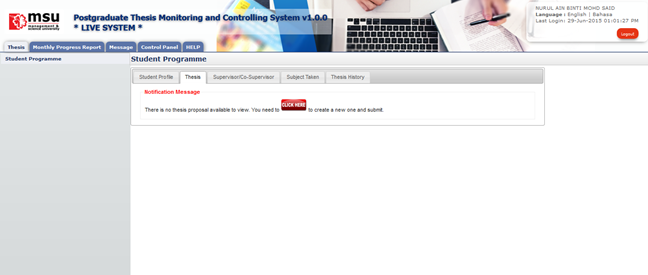
Figure 9: First Time Proposal Preparation
Pre-condition
- No history of submitting thesis proposal
Post-condition
- Submit proposal
- Proposal cancellation can be made
- Wait for faculty and senate to respond
Steps:-
- Click on the Thesis Tab on the Top Panel.
- System will show the message to prepare and submit the proposal.
- Click on the Click Here button to create the proposal.
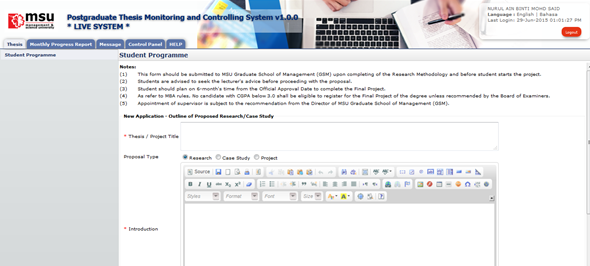
Figure 20: New Proposal Page
- Enter the Thesis / Project Title
- Select Proposal Type
- Enter the necessary description into the Introduction

Figure 11: New Proposal Page – Next Section
- Enter the necessary description into the Objective
- Enter the necessary description into the Brief Description
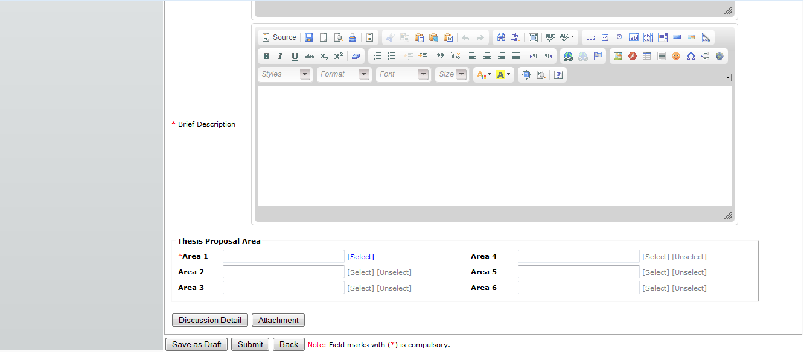
Figure 13: New Proposal Page – Next Section
- Minimum 1 Thesis Area need to be selected to associate with the proposal. That will also enable the Faculty to assign the right and suitable Supervisor / Co-supervisor to consult with the student.
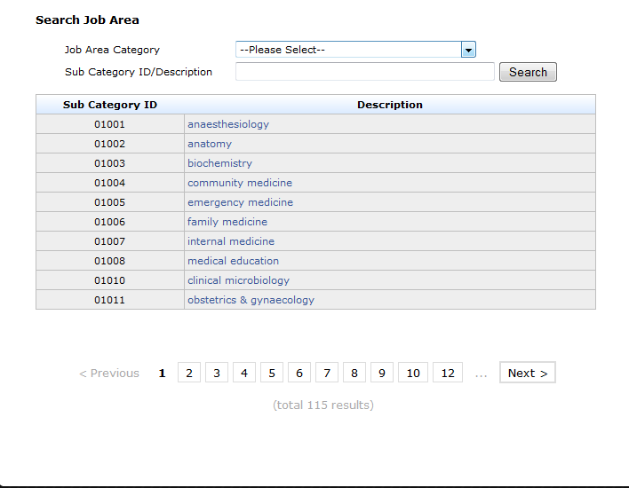
Figure 14: Thesis Proposal Area Searching Page
- On Thesis Area page, by default it will list all the result if the searching is done without provide the required searching criteria i.e. Thesis Area, Sub-category ID or Sub-Category Description.
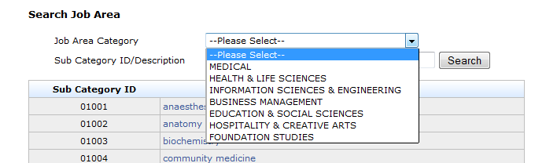
Figure 15: Thesis Proposal Area – Thesis Proposal Area Category Selection Page
- The Job Area Category lists all the category for Thesis Proposal.
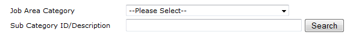
Figure 16: Thesis Proposal Area – Thesis Proposal Area Description
- Alternatively, the description also can be input by the user to search a specific thesis area category.
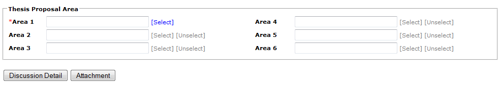
Figure 16: New Proposal Page – Next Section
* Please click Save as Draft first before proceeds. If not, all the detail which has been entered will be discarded.
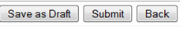
Figure 17: New Proposal Page – Next Section
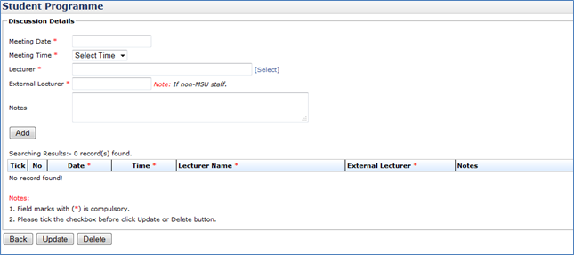
Figure 18: Discussion Detail
- Enter the discussion detail such as Meeting Date, Meeting Time, Lecturer or External Lecturer and Notes. All the field mark with * is compulsory.
- To select or choose lecturer involve, click Select link.
- Then click Add Button to proceed.
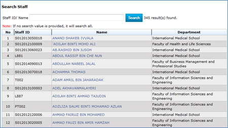
Figure 19: Search Staff Page - Select Lecturer
- On the Search Staff page, if the searching is done without enter the searching criteria, it will show all the lecturers.
- If the Staff ID or Name is provided, then the searching for that particular lecturer will be done.
- Based on the search result list, click on the selected lecturer to pick his/her name so that it will be populated into the Lecturer field list.
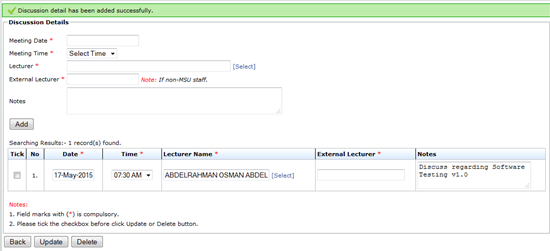
Figure 20: Discussion Detail
- Once all the required information have been provided, then click Add button to add it into the discussion list.
- To change or update the record, user can do it to the particular record.
- Then tick the checkbox and click Update Button.
- To delete the detail, tick the checkbox, and click Delete button to delete detail.
- To go back to the previous page, click Back Button
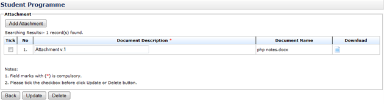
Figure 21: Attachment List
- To insert or add attachment, click Add Attachment button and windows popup will appear as figure 12.2.1.
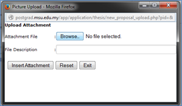
Figure 22: Upload Attachment
- Choose or Browse selected file that need to upload. File Description is not compulsory, so it can proceed by click Insert Attachment button. Then it will display like Figure 12.2.
- To Update Document Description, click on the field and change the description. Then tick the checkbox on the left side and click Update button to update.
- To delete attachment, tick the checkbox and click the Delete button to delete.
- To go back to previous page, click Back button
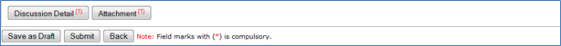
Figure 23: New Proposal Page – Next Section
- After the discussion detail and attachment has been insert, the number of discussion detail that being insert and the number of attachment uploaded will be shown on the button.
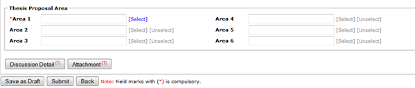
Figure 24: New Proposal Page – Next Section
- After all the necessary information has been provided, the student can save it temporarily via Save as Draft button in case there is a need to be reviewed and updated later. Once finalize, it can be submitted to the Faculty and Senate for approval and becomes a thesis.
- Click Back button if to return back to Student Programme page.
- If the proposal has been finalized and ready to submit for approval, the student can send it to Faculty via Submit button. Any changes cannot be done until the proposal is returned back by Faculty due to any changes needed.
- When Submit button is being clicked, the email notification will be sent to the faculty by the system. (Refer Appendix)
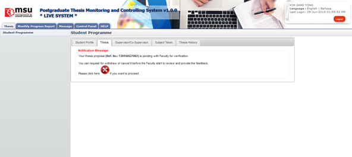
Figure 25: New Proposal Page – After submission
- After submit, system will notify student that their proposal has been successfully submitted to the Faculty for approval.
- If the student has changed his/her mind to withdraw or cancel the newly submitted proposal, he/she can do that via cancel button
 as shown above. Please refer next section on how to cancel the proposal.
as shown above. Please refer next section on how to cancel the proposal.
Created with the Personal Edition of HelpNDoc: Full-featured Help generator